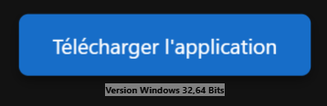
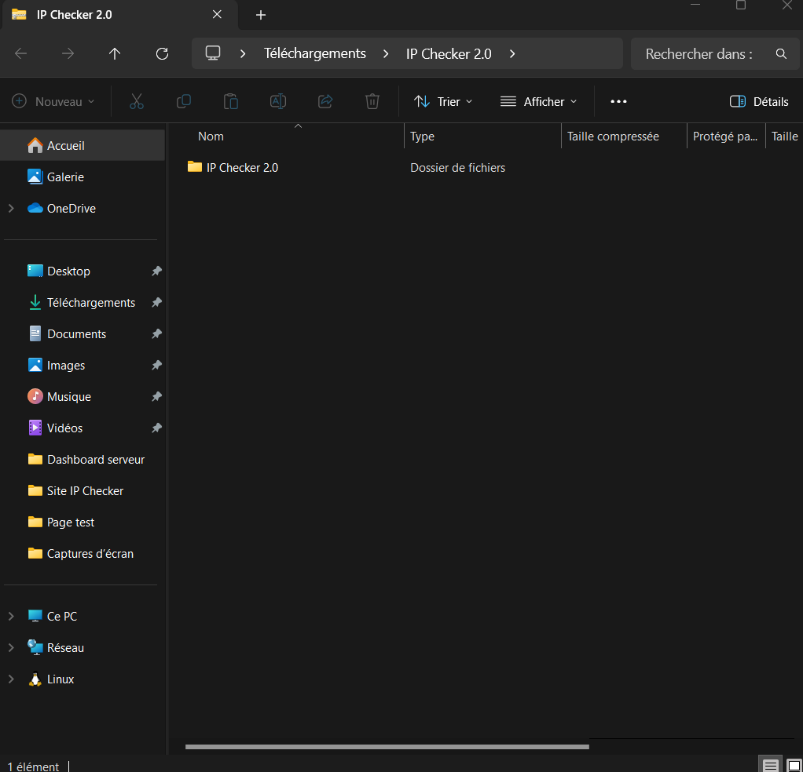
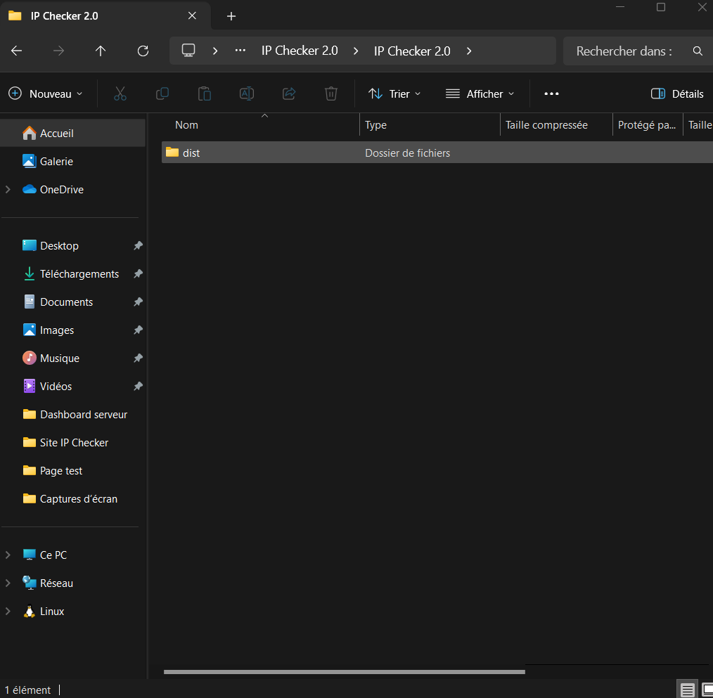
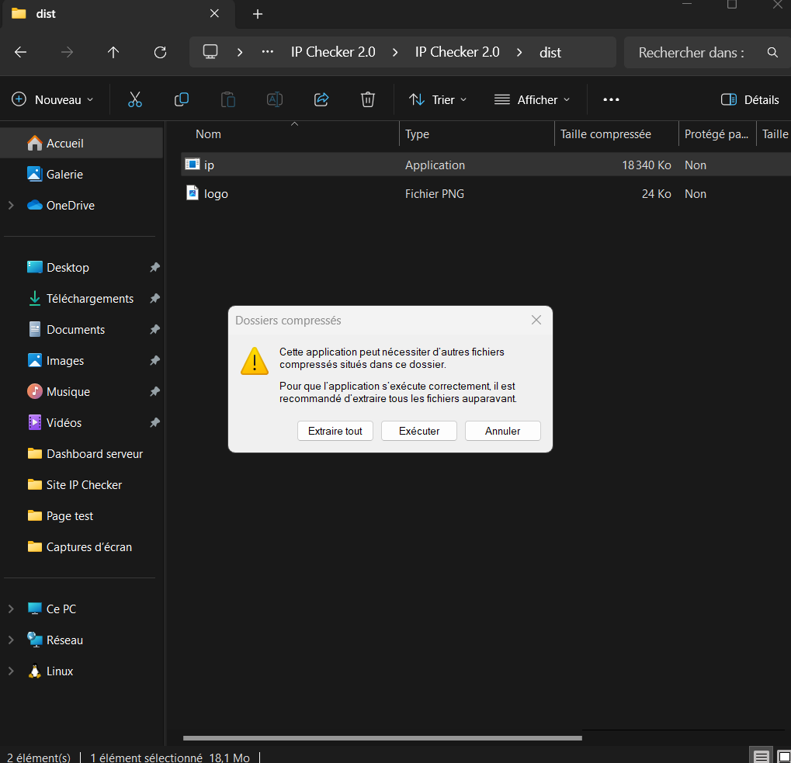
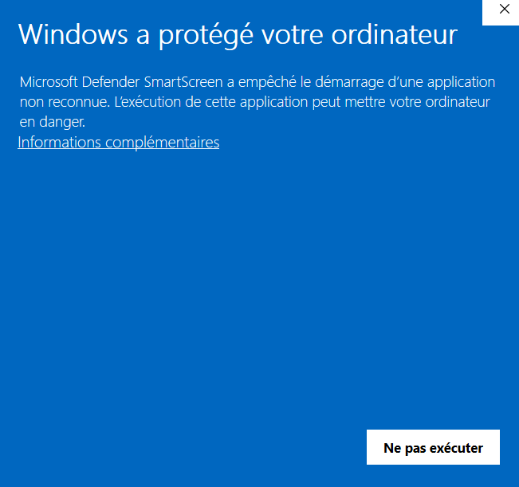
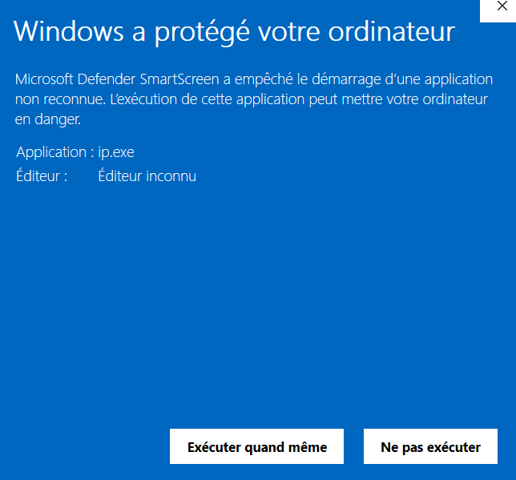
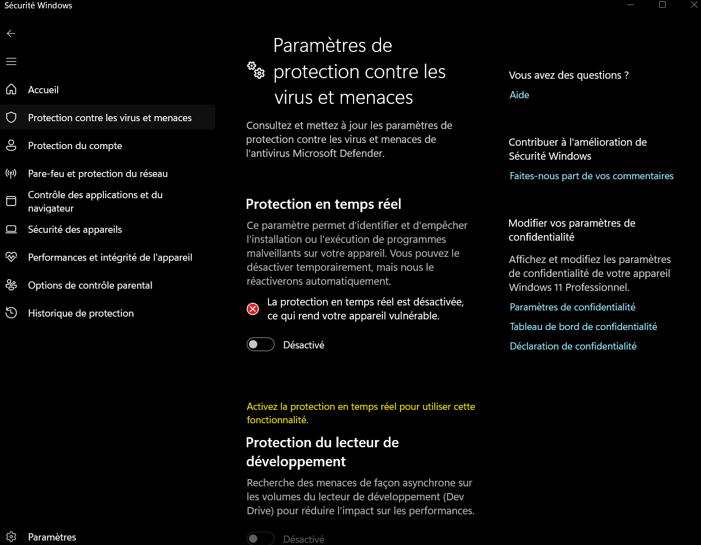

Tout d'abord, l'application est compatible avec Windows 32 et 64 bits. Nous ne disposons pas d'autres versions pour le moment. Pour installer l'application, vous devrez vous rendre sur la page d'accueil. Sur celle-ci, vous verrez une option "Télécharger l'application" (un bouton bleu avec le numéro de version indiqué en dessous). Il vous suffira alors de cliquer dessus et d'attendre que le téléchargement s'effectue.
Une fois cela fait, vous obtiendrez un fichier que vous devrez ouvrir. Je vous conseille d’utiliser un antivirus comme Pare-feu plutôt qu’Avast, car notre application est encore peu connue, ce qui pourrait potentiellement entraîner son blocage.

Après cela, vous vous retrouverez dans le dossier de l'application. Vous devrez ensuite accéder au dossier IP Checker 2.0, puis au sous-dossier dist. Vous y trouverez le fichier ip.exe, que nous allons exécuter par la suite.
 Une fois ip.exe exécuté, vous devrez cliquer sur l’option "Exécuter". Sur l’écran bleu, vous pourriez croire que l’application est bloquée, mais c’est normal : votre antivirus vous protège contre les applications inconnues. Cliquez alors sur "Informations complémentaires", puis sur "Exécuter quand même". L'application s’ouvrira alors normalement.
  Si cela ne fonctionne pas comme indiqué, je vous invite à accéder à votre antivirus ou à votre pare-feu afin de désactiver l’option "Défense Web", qui pourrait potentiellement bloquer notre application. En effet, celle-ci n’est pas signée et n’est donc pas reconnue par Windows Defender. Windows Defender vérifie si une application est signée pour en garantir la conformité.
Exemple ci-dessous : comment désactiver l'option Défense du Web.
